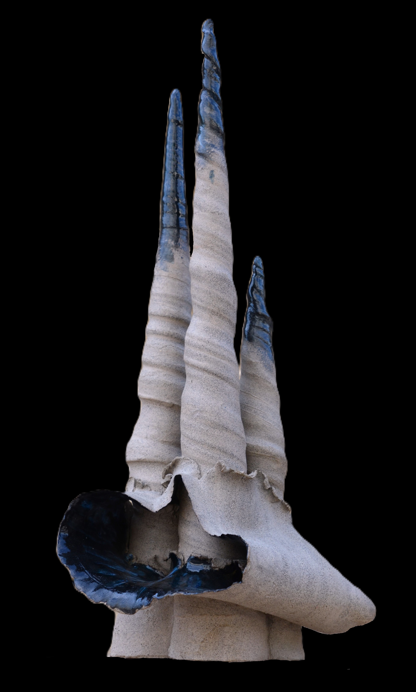
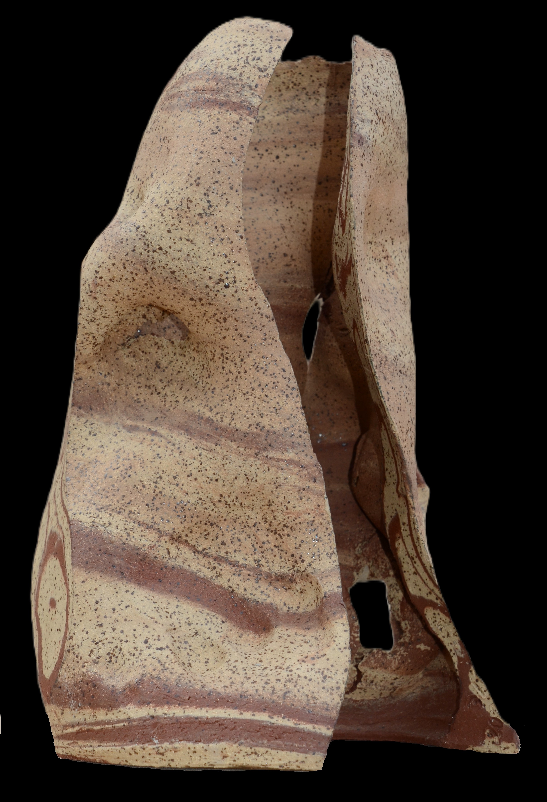
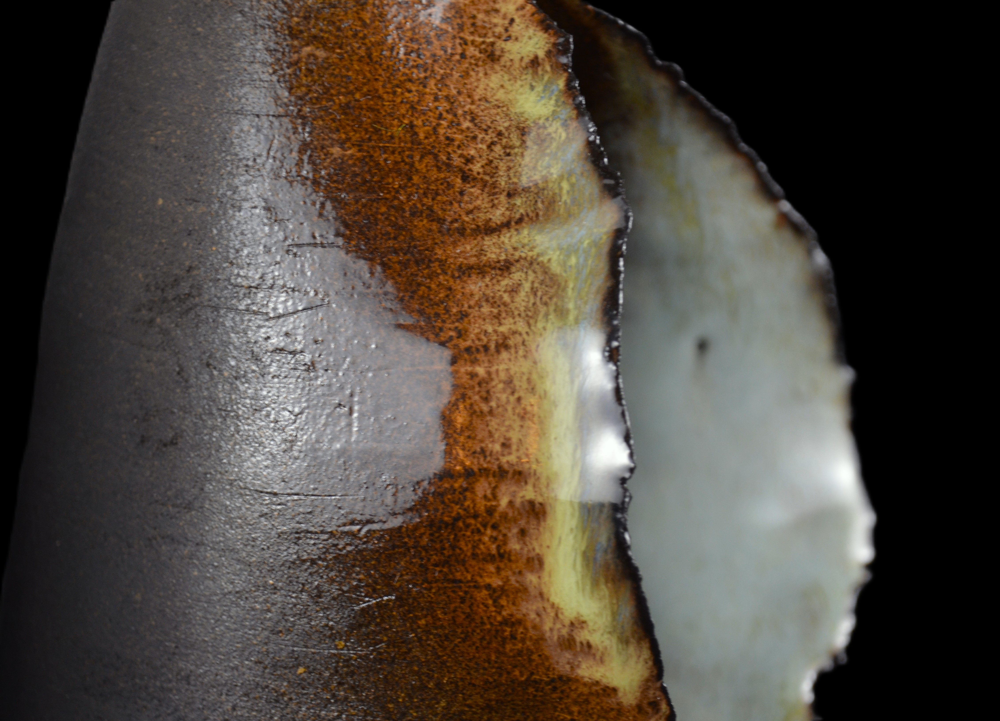
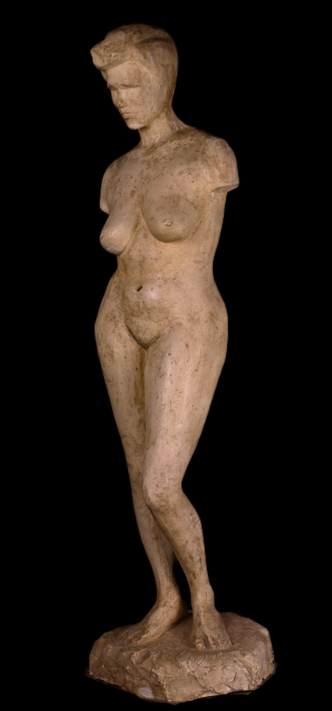
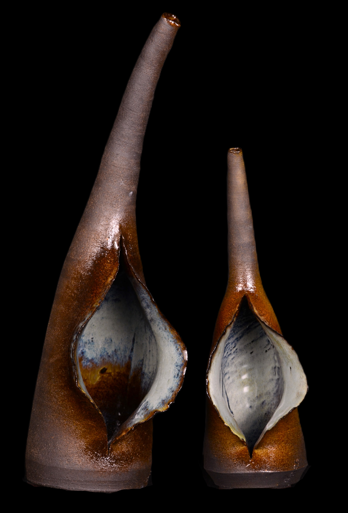
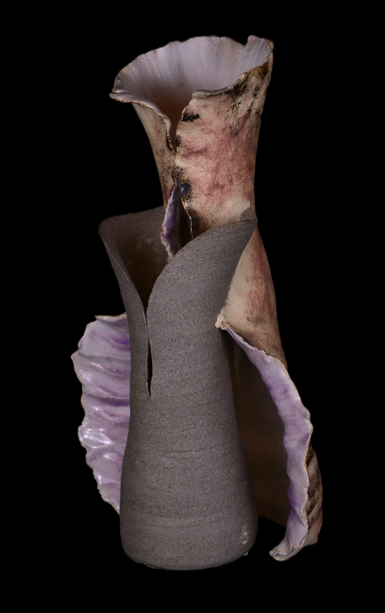
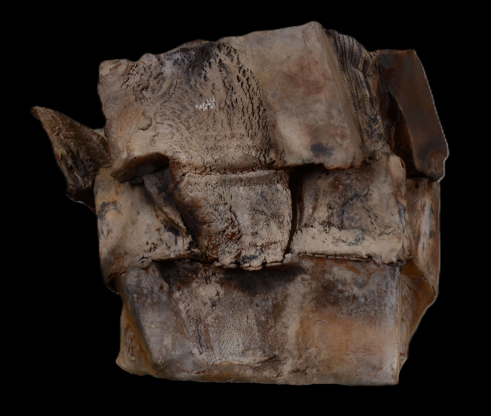
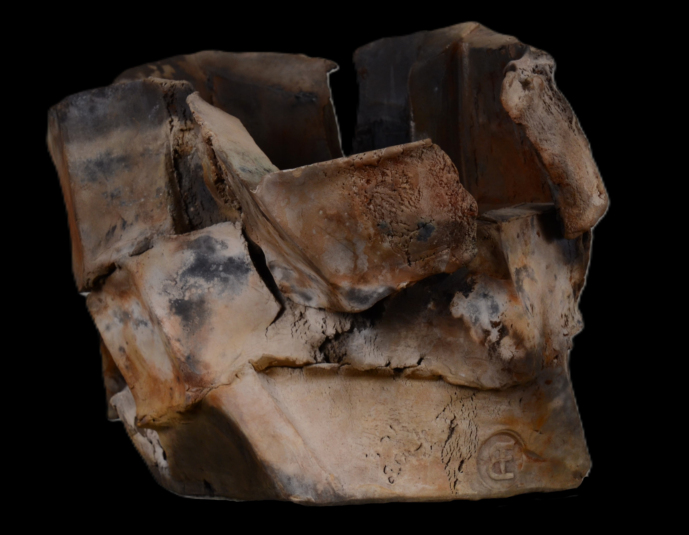
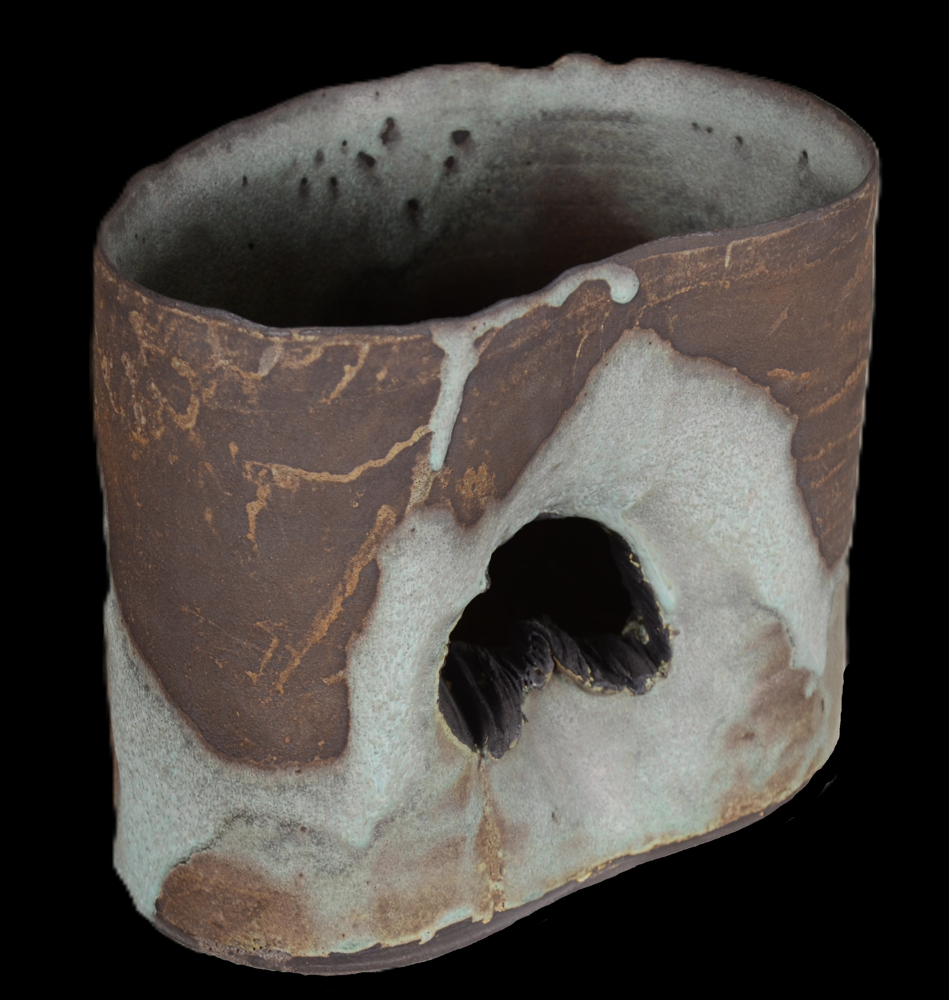

Artist Portfolio
Material, fire, gesture, form.
Udi Berg is a multidisciplinary artist whose practice moves between sculpture, painting, sketching, ceramics, and blacksmithing — creating work that feels tactile, elemental, and deeply human.
Designed for collectors, curators, galleries, and collaborators, this portfolio frames the work with quiet luxury, strong material presence, and a serious contemporary tone.

Selected work
A painterly and sculptural practice spanning charcoal, ceramics, forged material, and large expressive surfaces.
Disciplines
Across mediums, with one hand.
A gallery-style presentation with restrained typography, generous space, and a warm handmade palette.
SculptureForm, volume, physical presence.
PaintingSurface, atmosphere, memory.
SketchesGesture, urgency, first thought.
CeramicsEarth, fire, touch, ritual.
BlacksmithingHeat, force, forged precision.
Gallery
Selected work
Current uploaded works from the ceramic series.















About
Udi Berg
Udi Berg is an artist working across sculpture, painting, ceramics, blacksmithing, and drawing. His practice is rooted in material intelligence: the resistance of metal, the weight of clay, the immediacy of line, and the slow construction of surface.
Across mediums, Berg returns to questions of structure, memory, labor, and transformation. The result is a body of work that feels grounded yet elevated — handmade, rigorous, and unmistakably personal.
“The work carries force, but it also carries touch.”
Positioning
Built to appeal to a high-end audience
The visual direction borrows from strong contemporary artist sites and luxury gallery presentations: fewer distractions, better pacing, serious imagery, and a sense of confidence.
Next, I can add real titles, years, media, dimensions, a stronger collector-facing bio, exhibitions, and a dedicated commissions or inquiries section.
Contact
Studio inquiries
For exhibitions, commissions, acquisitions, and professional inquiries, please use the details below.
Phone054-480-3703
Emaildrehudberg@gmail.com
Current status
First real gallery pass is live
This version now uses the files currently in the repo: the artist photo plus the ceramic series. As you add more categories later, I can fold them into the same structure.